MS Dhoni Biography
Mahendra Singh Dhoni or as he is commonly known as MS Dhoni is an Indian cricketer who represents India on the International stage. On the domestic level, Dhoni plays first-class cricket for Jharkhand.
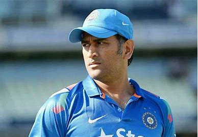Dhoni Family
Dhoni was born on 7 July 1981 in Ranchi, Bihar (now in Jharkhand). He was raised in a Hindu Rajput family. His parents belonged to the village of Lwali is in the Lamgara block of Almora District, Uttarakhand. Dhoni’s father, Pan Singh worked in junior management positions in MECON. Dhoni has a sister named Jayanti Gupta and a brother named Narendra Singh Dhoni. On 4 July 2010, Dhoni got married to his schoolmate from DAV Jawahar Vidya Mandir, Sakshi Singh Rawat. The couple gave birth to a beautiful girl on 6 February 2015 and named her Ziva.
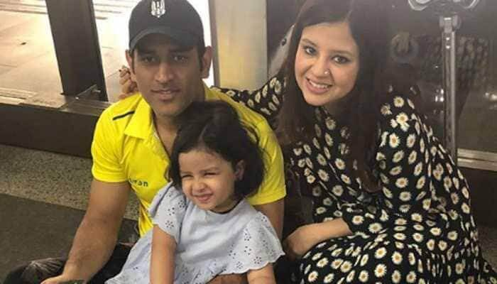MS Dhoni in Indian Military
MS Dhoni is a qualified paratrooper in the Indian army after he completed five parachute training jumps from Indian Army aircraft in the Agra training camp in 2019.
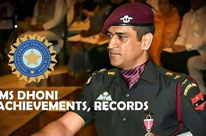MS Dhoni - Career
In 1995, he joined the Commando cricket club and stood behind the stumps for them for the next three years. He was then picked for the Vinoo Mankad Trophy Under-16 Championship in the 1997/98 season and performed well. In 1998, Dhoni started to play for the Central Coal Fields Limited (CCL) team. During his time at the CCL, Deval Sahay would gift him fifty rupees for every 6 that he scored in Sheesh Mahal tournament cricket games. Sahay then pushed for Dhoni’s selection in the Bihar team.
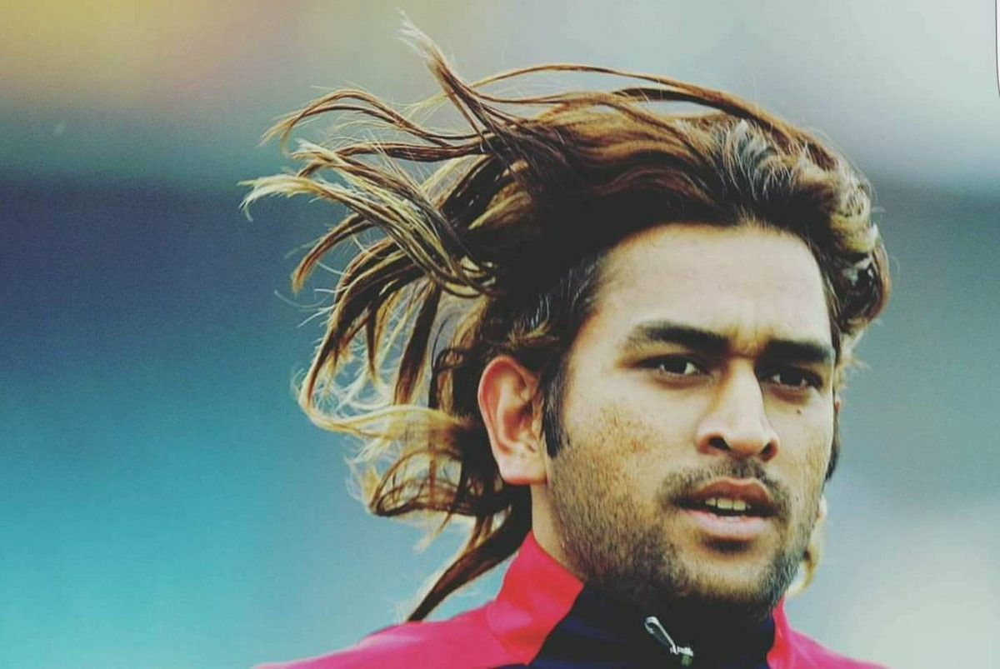Domestic Career
Dhoni was selected in 1998 by Deval Sahay to play for the Central CoalFields Limited (CCL) team. This was the first time that Dhoni stepped into professional cricket. Dhoni showed exceptional talent which impressed Deval Sahay who used his contacts in Bihar Cricket Association to push for his selection in the Bihar team. Dhoni debuted for the senior Bihar Ranji Team for the 1999–2000 season. He was also included in the Bihar U-19 squad for the 1998–99 season where he scored 176 runs in 7 innings from 5 matches. Dhoni however was not picked for the East Zone U-19 squad (CK Nayudu Trophy) or Rest of India squad (MA Chidambaram Trophy and Vinoo Mankad Trophy). Dhoni made the first-class debut in Ranji Trophy debut for Bihar in the 1999–2000 season. He was just eighteen-year-old at that moment. After playing Ranji Trophy for over three years, Dhoni was picked over international cricketer Deep Dasgupta to represent East Zone. It was then that Dhoni stepped into the limelight. Dhoni was scouted by BCCI’s small-town talent-spotting initiative TRDW and discovered by TRDO Prakash Poddar. Dhoni was selected for India A squad for a tour of Zimbabwe and Kenya. His performances in that tour earned him the attention of the likes of Sourav Ganguly and Ravi Shastri.
IPL Career
Dhoni’s services were contracted by the Chennai Super Kings for US$1.5 million in IPL’s inaugural season in 2008. He was the most expensive player in the IPL for the first season auctions. Dhoni captained Chennai Super Kings to victory in 2010 and 2011, 2018 and 2021 Indian Premier League titles and the 2010 and 2014 Champions League T20 titles. After the CSK was banned for two years, Dhoni was subsequently bought by Rising Pune Supergiant for US$1.9 Million in 2016. He was the captain that year but after his team finished in 7th place he was replaced by Steven Smith. MS Dhoni’s CSK reached the final for a record 8th time in 2019 but was stopped by a resurgent Mumbai Indians side which won the final by a whisker. Under MS Dhoni’s captaincy, in IPL 2021 final CSK beats KKR by 27 runs and won the trophy for the fourth time.
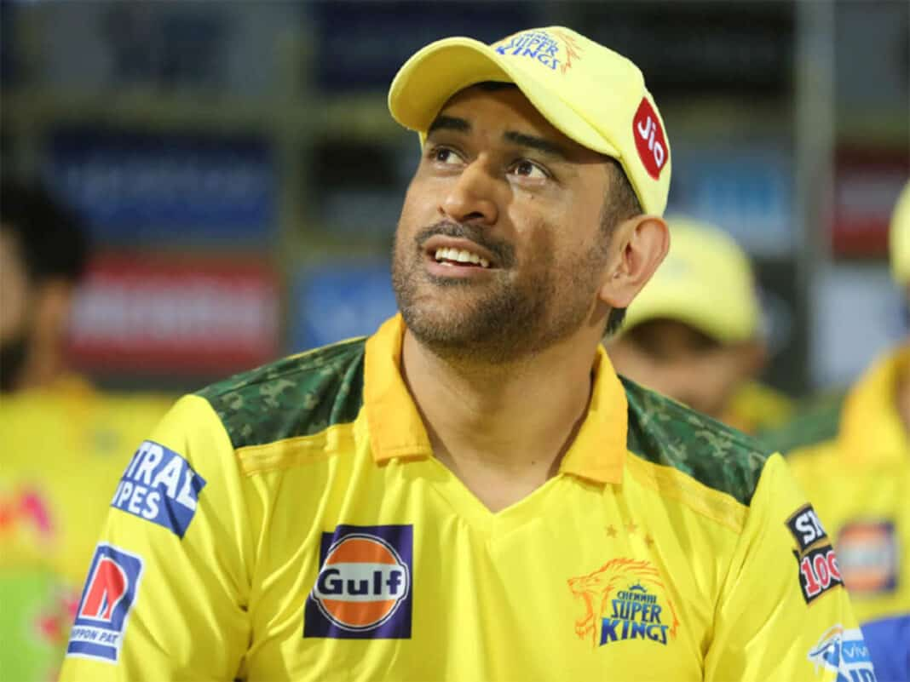MS Dhoni International Career
Dhoni arrived on the international stage when the Indian ODI team was struggling to find it’s Wicketkeeper-Batsman. We saw Rahul Dravid in the 2000s and then the arrival of wicket-keeper/batsman from the junior ranks such as Parthiv Patel and Dinesh Karthik. But they didn’t fit the team combination well. Then came in Dhoni, who was picked for the ODI squad for the Bangladesh tour in 2004/05. Dhoni had the most disastrous start to a career which anyone can ever ask for. Getting run out for a duck on debut is the last thing you want. But, despite ordinary performances in his inaugural series against the Bangladesh cricket team, Dhoni was selected for the series against Pakistan. ‘ Dhoni scored his first century in his fifth one-day international. He scored 148 in Visakhapatnam off only 123 deliveries. And thus began the Dhoni era. His last ODI inning came against New Zealand in the 2019 WC Semifinal where he ended his ODI journey in the same way he started–with a runout. Although there were speculations that MSD will stage a comeback after the 2020 IPL, the unforeseeable circumstances due to COVID-19 ensured that MS Dhoni played his last international game without any farewell.
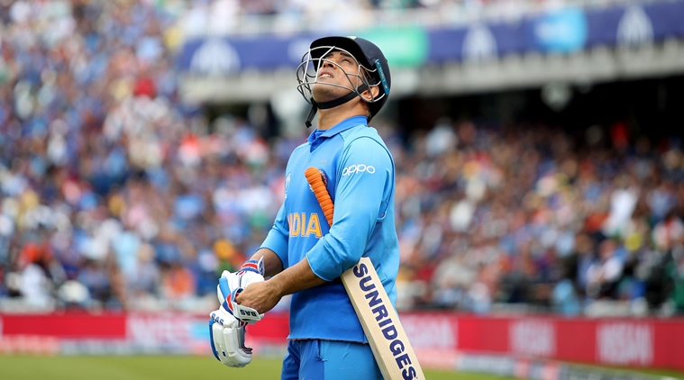In World Cup Tournaments:
MS Dhoni has featured in four World Cups, 2 as a captain. Under his captaincy, India lifted the World Cup in 2011 and reached the semifinals in 2015. MS Dhoni: 2011 World Cup Winning Six His Shot At ImmortalityOf all the things that MS Dhoni will be remembered for, that six in the 2011 ICC World Cup final is definitely the most lasting memory of all cricket followers who have followed and idolised him over the years
.jpg)
ICC Cricket World Cup:
Owing to good performances in the middle order as well as behind the stumps, MSD was selected for the World Cup in the Caribbean. India had a disappointing campaign as they lost two of the three group games against Sri Lanka and Bangladesh. Dhoni had horrible innings as he got out duck in both the games. The team, including Dhoni, was highly criticized for their performances. Around 200 fans attacked Dhoni’s under-construction home in Ranchi after the Bangladesh loss.
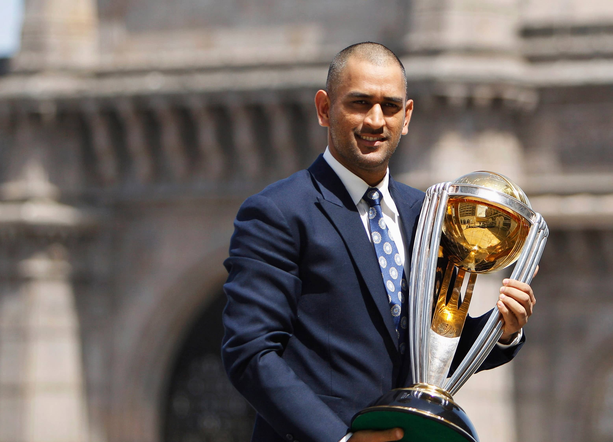2011 ICC Cricket World Cup
By the 2011 WC, Dhoni was the captain of all three Tests, T20I, and ODI’s. Dhoni’s major contribution with the bat came in the finals against Sri Lanka. Chasing 275 at the Wankhede, Dhoni promoted himself up the order after Sachin, Sehwag, and Virat Kohli lost their wickets early. Dhoni and Gambir then build a steady partnership to stabilise the Indian innings. Dhoni had scored 60 from 60 balls, after which started accelerating. He scored the winning six of Numan Kulaeskara, a shot which no one will forget and won the Man of the Match award. Dhoni’s crucial decision to promote himself up the order to put off Muralitharan’s spin threat and right hand-left hand combo showed why he was one of India’s best captains.
.jpg)
ICC Cricket World Cup
Under Dhoni’s captaincy in the 2015 World Cup held in Australia and New Zealand, the Men in Blue were able to reach the semi-finals with comfort, beating Bangladesh in the quarter-finals. However, they went on to lose to hosts Australia in the semi-finals at the Sydney Cricket Ground. India had won 7 consecutive matches in this World Cup and won 11 straight games overall in World Cups. After beating Bangladesh, MSD became the first non-Australian captain to win 100 ODI matches, and the first Indian captain to hold the record. He scored 237 runs in 6 matches with an average of 59.25. His 45* and 85* against West Indies and Zimbabwe helped India on the road to the semi-finals. He scored 65 against Australia in the semis but was not able to prevent the Aussies to run over India on their way to glory.
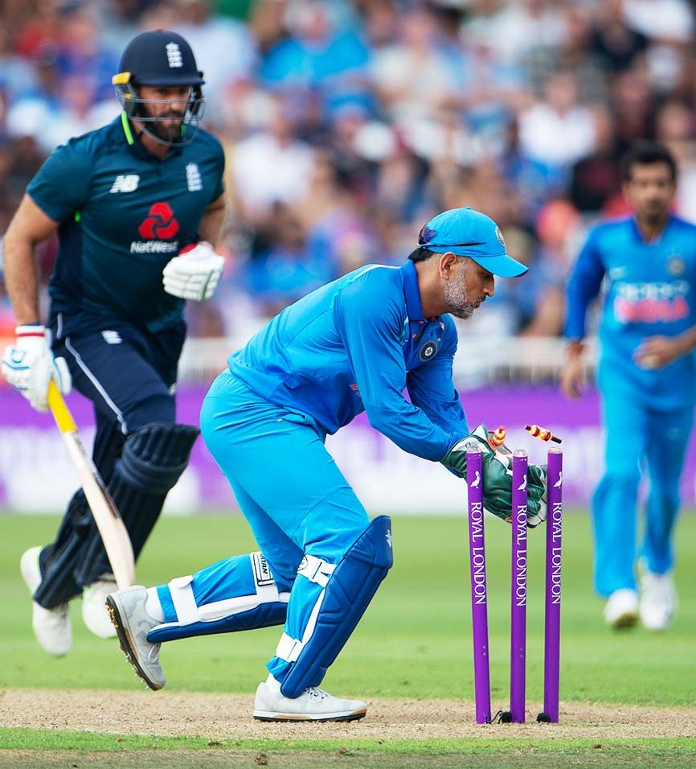2019 ICC Cricket World Cup
Dhoni played his last World Cup at the age of 38. This time around, he was India’s wicketkeeper leading into the tournament. Despite his handy knocks against South Africa, Australia, and West Indies, MSD was primarily criticized for his strike rate and ‘lack of intent’. In the semis against New Zealand, Dhoni scored a fighting half-century and built a promising partnership with Ravinder Jadeja after the top-order fell. It looked like India were on their way to the final. But, Dhoni got runout at a crucial stage, breaking a billion dreams.
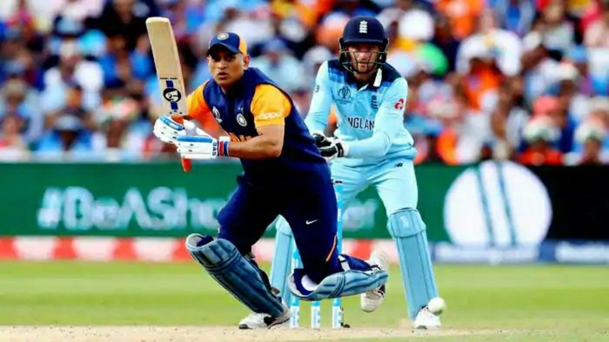Career
Dhoni’s performances in ODIs against Sri Lanka opened the doors for Test Cricket for him. Dhoni replaced Dinesh Karthik in December 2005 and was the last man standing in his 30 run journey in his debut test innings. Dhoni went on to score his maiden half-century in the second Test. He was very aggressive with it too, as the half-century came off 51 balls. We witnessed the Dhoni in making who was soon going to lead India to the number 1 spot in Tests.
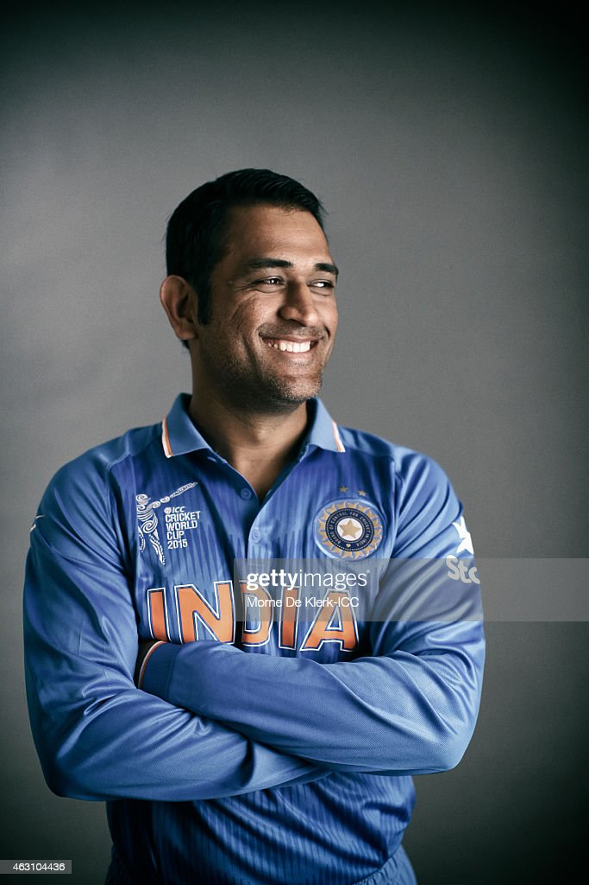International Career
MSD has been a part of the Indian T20 team from the start. He was one of the 11 players to play India’s first-ever T20 international match against South Africa in 2006. Despite his duck, a lucky India won the match. However, when they faced the Proteas in the 2007 ICC T20 Championships, Dhoni scored 45 as India won the match. Since then Dhoni went on to lead the Indian team in the inaugural T20 championships and various T20 international victories. Apart from his role as a wicketkeeper-captain, he played an important role as a finisher for India in T20’s.
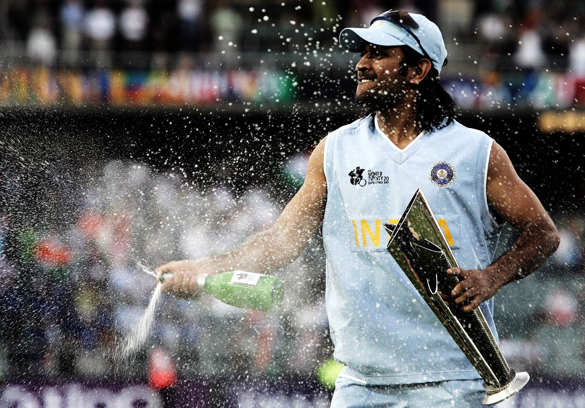World Cups
Just before the inaugural T20 World Cup 2007, MS Dhoni was named to lead the team. India ended up lifting the trophy. Apart from his role as a captain, MSD played an essential role in the middle order as a finishing batsman. His innings in the semi-finals against Australia helped India to a 15-run victory and a place in the finals. While he was unable to push India to a satisfying target. MSD’s captainship and cool-headedness in the final over led India to a victory against Pakistan in the final. Dhoni also played an important role in India’s run to the final of the 2014 T20 World Championships. He was declared in the Team of the tournament.
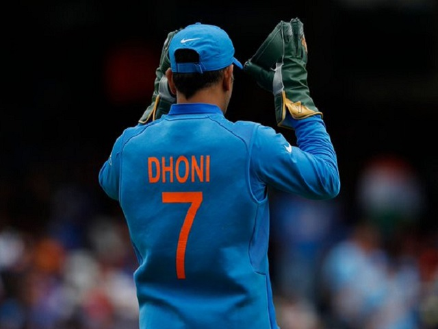